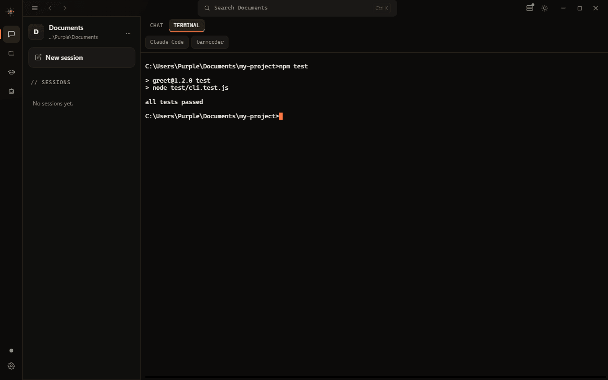

Codes with no API key.
An agent loop with real tools — read, edit, run — in your terminal, or a desktop app with a shell inside it. It routes each turn to the right model on its own.
npm install -g @termcoder/tui
Not a chatbot in a terminal.
It reads the repo, edits files, runs commands, and checks its own work — a real agent loop, not a prompt box with autocomplete. The rest of this page is the machinery, shown as it actually is.
No API key.
Opens on a keyless, community-hosted model. No sign-up, no card. It is rate-limited when busy and prompts go to a third party we do not run — point it at local Ollama to make it private.
The right model per turn.
termcoder/auto classifies each prompt and sends a simple one to a fast model, a hard
one to a strong model. No LLM in the routing loop — it is a regex and a tier table. A router and
a prompt layer, not a model we trained.
// classify(prompt) len > 600 → complex /architect|debug|race| security|refactor| migrate|optimize/ → complex /across|codebase| multiple files/ → complex else → simple // route(complexity) simple → tier.fast gemini-flash / haiku complex → tier.strong gemini-pro / sonnet
Sixteen real tools.
Every one runs on your machine, behind a permission prompt you can make sticky. Retrieval is
built in — symbols and repomap let it find where a thing is defined
before it answers. No hidden capabilities, nothing calling home.
It remembers.
Tell it once — your stack, the fragile module, the thing you always forget. It keeps that across sessions, so you stop re-explaining your own project every morning.
- uses pnpm, never npm
- the auth module is fragile — tread carefully
- no barrel files
- tests run with
npm test, not a watcher
Give it a goal.
Hand it a task and a verify command. It works, runs the command, reads the failure, and goes again — until it passes. Every turn is checkpointed, so you can walk it back.
A real shell, inside the app.
Chat, an editor, and an embedded terminal in one window. It scans your PATH and drops a one-click chip on every coding CLI it finds — Claude Code, Codex, Gemini CLI. The shell keeps running while you chat.

Three states, derived not guessed.
The status dot is read from what the session is actually doing, not from a spinner. Learn it once and the UI stops needing tooltips.
Prompt waiting, nothing in flight. The dot is dim.
A turn is running — reading, editing, thinking. The dot is ember and pulses.
The last turn failed — a bad key, a rate limit, a tool that threw. /retry or fix and go again.
Files are the source of truth.
No database, no cloud. Your config, memory, sessions, and custom agents are plain files you can read, edit, diff, and delete. Nothing about your project leaves your machine.
Hands on keys, not mouse.
Every panel and action is one chord away. Shown with Ctrl — on macOS swap for ⌘. Rebind any of them in Settings.
SESSION
VIEW
MODEL
A tutor is built in.
The same engine, pointed at studying instead of shipping. Spaced-repetition flashcards, practice quizzes, worked homework, and a streak that survives your weekends.
What does the Krebs cycle produce for the electron transport chain?
Agents, skills, commands.
Agents
Give an agent its own model, prompt, tools, and the exact paths it may touch.
Skills
Reusable playbooks it loads only when a task needs them, so they cost nothing otherwise.
Commands
Your own slash commands, with arguments, shell output, and file mentions baked in.
MCP & LSP
Bring outside tools and language servers into the same loop.
One command, every platform.
No accounts, no API keys, no telemetry. The CLI runs on Linux, macOS, and Windows; the app ships installers for all three with Node bundled.